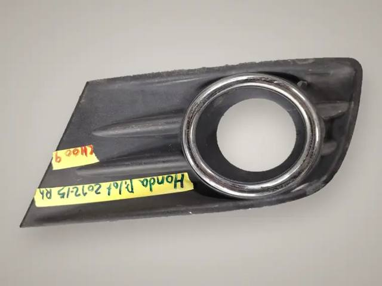

Piezas de carrocería para Honda Pilot
14 piezas disponibles hoy para Honda Pilot, cada una con su foto y su código: defensas delanteras (3), covers de halógena (3), defensas traseras (2), halógenas y faros antiniebla (2). Dinos el año de tu carro y te confirmamos si le sirve.
- Garantía de 3 días
- Foto real de cada pieza
- Efectivo, Yappy o ACH
- Lunes a sábado, 8:00 a. m. a 5:00 p. m.
Defensas delanteras para Honda Pilot 3
 904Pilot
904Pilot 906Pilot
906Pilot 908Pilot
908PilotCovers de halógena para Honda Pilot 3

CH009Pilot2009-15 · lado derecho · original CH031Pilot2009-15 · lado izquierdo · original
CH031Pilot2009-15 · lado izquierdo · original CH065Pilot2016-18 · original
CH065Pilot2016-18 · original DT153Pilot
DT153Pilot DT155Pilot
DT155Pilot HA016Pilot
HA016Pilot HA015Pilot
HA015Pilot PT055Pilot
PT055Pilot DTI021Pilot
DTI021Pilot